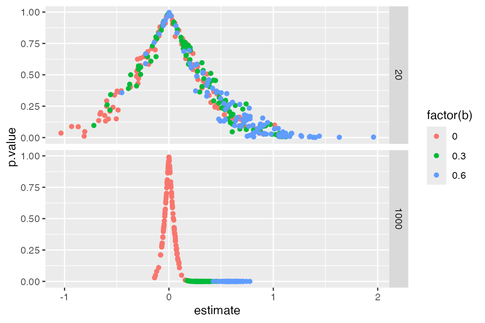

The idea
To contribute a design to DesignLibrary you just
have to place a self-contained .R file in
inst/designs/. That file declares a design and, optionally,
a short YAML header. Once it is there, the design can be loaded,
modified, diagnosed, and browsed in the bundled Shiny app.
For the contribution workflow (fork, add file, refresh, check, pull request), see the vignette Contributing a design or the Shiny Contribute tab.
What a design file looks like
Here is the starter design two_arm_simple.
inst/designs/two_arm_simple.R
---
id: two_arm_simple
label: Simple two-arm trial
category: template
keywords: [experiment, two-arm]
description: >
Simple two-arm trial with complete random assignment and a population average treatment effect.
params:
"N": "Number of units (sample or population size)"
"b": "Treatment effect (outcome scale)"
diagnosands: [bias, power]
include_in_shiny: true
---
design <-
declare_parameters(
N = 1000, # Number of units
b = 0.2 # ATE
) +
# M: model
declare_model(N = N, Y_Z_0 = rnorm(n()), Y_Z_1 = Y_Z_0 + b) +
# I: Inquiry
declare_inquiry(ATE = mean(Y_Z_1 - Y_Z_0)) +
# D: Data strategy
declare_assignment(Z = complete_ra(n())) +
declare_measurement(Y = Z*Y_Z_1 + (1-Z)*Y_Z_0) +
# A: Answer strategy
declare_estimator(Y ~ Z, .method = difference_in_means, inquiry = "ATE")The header is optional. At minimum you need a design object (by
default named design). Parameter tips are plain strings
under params:; quote keys such as "N" and
"b".
As soon as that file sits in inst/designs/, it is
available to make_design(), get_args(),
get_code(), the maintainer audits, and
run_shiny().
What designs are included?
list_designs()
#> DesignLibrary library: 68 designs
#>
#> * Getting started
#> two_arm_simple (Simple two-arm trial)
#> two_arm_flexible (Flexible two-arm trial)
#> three_arm (Three-arm trial)
#> two_by_two (2x2 factorial (library))
#> two_arm_block_cluster (Two arm trial with blocks and clusters)
#> two_arm_with_blocks (Two-arm trial with blocks)
#> two_arm_attrition (Two-arm trial with attrition)
#> factorial_2x2x2 (2x2x2 factorial)
#> multiarm_trial (Multi-arm trial)
#> pretest_posttest (Pretest-posttest design)
#> randomized_response (Randomized response)
#> mediation_analysis (Mediation analysis)
#>
#> * Other RDSS designs
#> audit_experiment (audit experiment)
#> audit_intervention (audit intervention)
#> baseline_over_N (A baseline declaration intended to be reed over $N$.)
#> blocked_and_clustered (blocked and clustered)
#> bootstrapped (bootstrapped)
#> cluster_random_sampling (cluster random sampling)
#> conditional_expectation (Conditional expectation function)
#> conjoint (conjoint)
#> covariate_adjustment (covariate adjustment)
#> declaration_using_declare (Example of declaration using Declare)
#> ... and 46 more
#>
#> print(list_designs(), list_all = TRUE) lists every design.
#>
#> See design_info("id") or get_args("id") for details;
#> as.data.frame(list_designs(discover_params = TRUE)) for parameters.Call list_designs() to see ids and labels. Use
design_info("two_arm_simple") or
get_args("two_arm_simple") for one design, or
as.data.frame(list_designs(discover_params = TRUE)) for the
table including redesignable parameters.
Use DesignLibrary to make a design
my_design <- make_design("two_arm_simple")
my_design
#> Research design with 6 steps
#>
#> Step 1 (parameters): declare_parameters(N = 1000, b = 0.2)
#> Step 2 (model): declare_model(N = N, Y_Z_0 = rnorm(n()), Y_Z_1 = Y_Z_0 + b)
#> Step 3 (inquiry): declare_inquiry(ATE = mean(Y_Z_1 - Y_Z_0))
#> Step 4 (assignment): declare_assignment(Z = complete_ra(n()))
#> Step 5 (measurement): declare_measurement(Y = Z * Y_Z_1 + (1 - Z) * Y_Z_0)
#> Step 6 (estimator): declare_estimator(Y ~ Z, .method = difference_in_means, inquiry = "ATE")
#>
#> Parameters and objects the design refers to:
#> name value kind declared steps
#> b 0.2 scalar TRUE 1, 2
#> N 1000 scalar TRUE 1, 2Change parameters and simulate
Parameters are taken from the design itself. Pass new values to
make_design(); under the hood this uses DeclareDesign’s
redesign(). A core set of designs also keep DesignLibrary
0.1 names, so two_arm_designer(N = 40, ate = 0.2) is the
same idea as
make_design("two_arm_flexible", N = 40, ate = 0.2).
make_design("two_arm_simple", b = 0.3) |>
simulate_design(sims = 2)
#> # A tibble: 2 × 15
#> design sim_ID term estimate std.error statistic p.value conf.low conf.high
#> <chr> <int> <chr> <dbl> <dbl> <dbl> <dbl> <dbl> <dbl>
#> 1 design_1 1 Z 0.405 0.0623 6.50 1.26e-10 0.283 0.527
#> 2 design_1 2 Z 0.202 0.0666 3.03 2.53e- 3 0.0710 0.332
#> # ℹ 6 more variables: df <dbl>, outcome <chr>, estimator <chr>, inquiry <chr>,
#> # estimand <dbl>, b <dbl>You can now change all parameters in one go.
make_design("two_arm_simple", b = c(0, .3, .6), N = c(20, 1000)) |>
simulate_design(sims = 100) |>
ggplot(aes(estimate, p.value, color = factor(b))) +
geom_point() + facet_grid(N~.)
Browse in Shiny
The app opens on a searchable library table. Click a row to open the
design, expand its profile, run it once, diagnose it, or redesign
parameters. For a server deploy: install the package, run
install_library_dependencies(), then
copy_library_shiny(dest).
Maintainer tools
A short set of helpers keeps the library honest:
-
contributor_checklist()— what a design file should satisfy -
audit_designs()— load each design and check that YAMLparams:names match redesignable objects -
bake_previews()— write compact diagnosis previews (sims = 100by default) intoinst/previews/ -
refresh_library()— index, audit, and bake in one step
Run maintainer helpers from the package source tree, or set:
options(DesignLibrary.root = "C:/path/to/DesignLibrary")
refresh_library()That is the whole loop: drop in a design file, use it from R or
Shiny, and refresh the library when you change the set. Step-by-step
contribution guidance is in
vignette("contributing", package = "DesignLibrary").